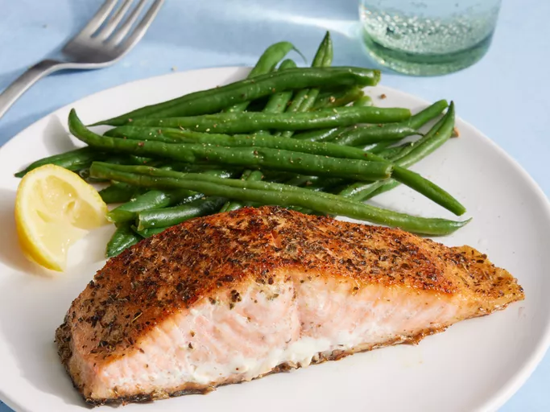

Home
5-Ingredient Salmon

Description
This easy salmon recipe is a delicious way to prepare fresh fillets using
just a few ingredients from your pantry.
Ingredients
- 1 tablespoon garlic powder
- 1 tablespoon dried basil
- ½ teaspoon salt
- 4 (6 ounce) fillets salmon
- 2 tablespoons butter
- 2 tablespoons butter
Steps
- Gather all ingredients
- Stir garlic powder, basil, and salt together in a small bowl
- Rub the mixture evenly over salmon.
-
Melt butter in a large skillet over medium heat. Add salmon and cook
until browned and flaky, about 5 minutes per side.
- Serve salmon with lemon wedges.